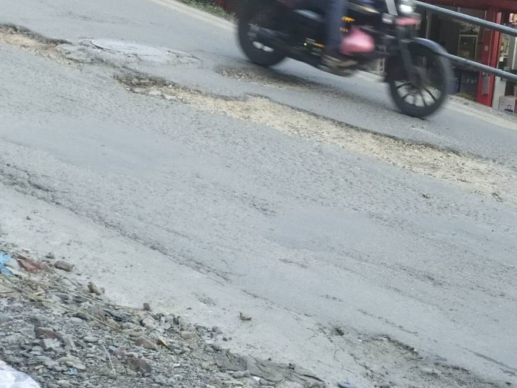
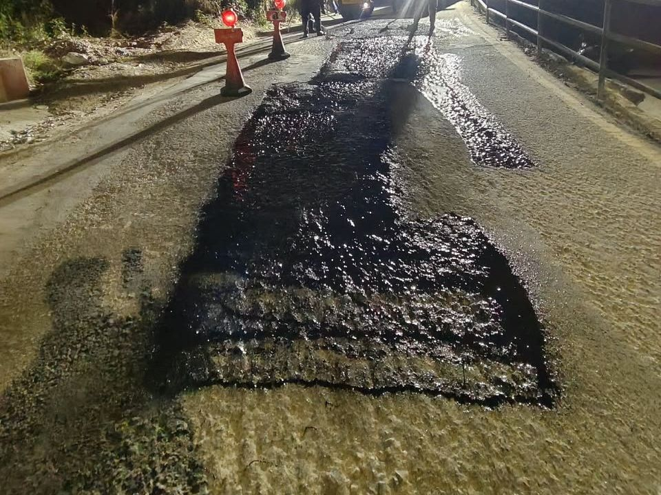
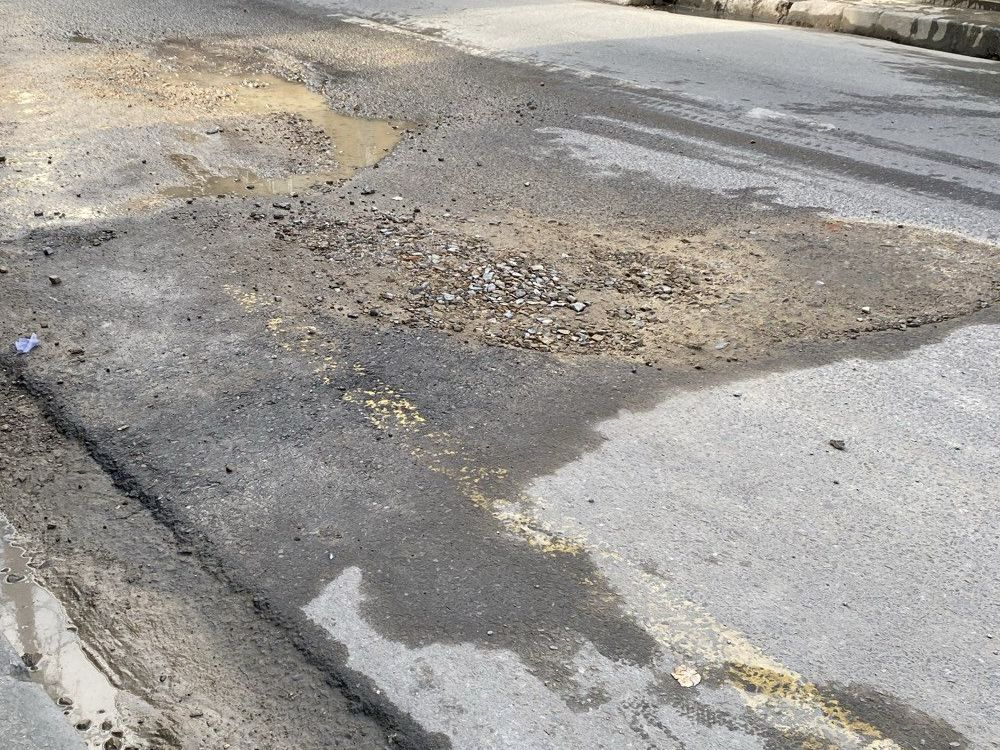
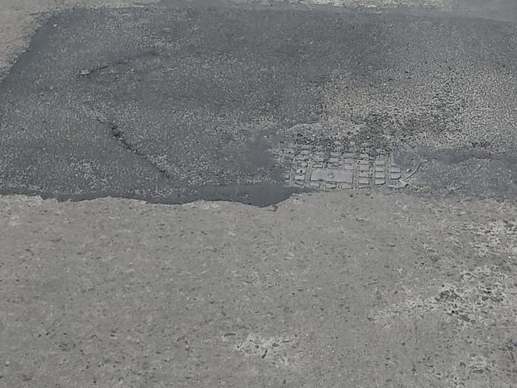
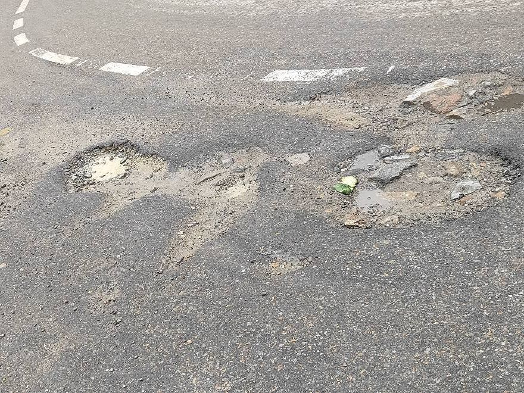
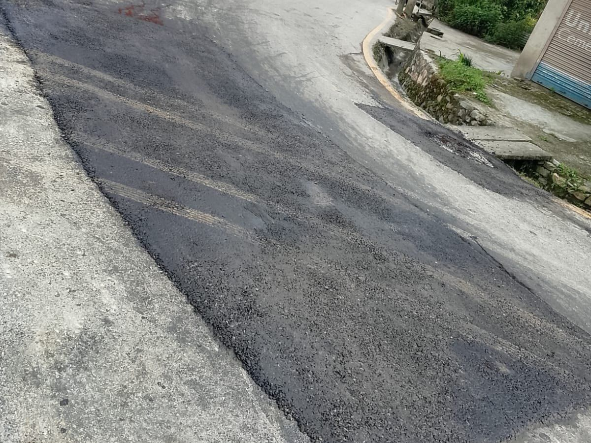
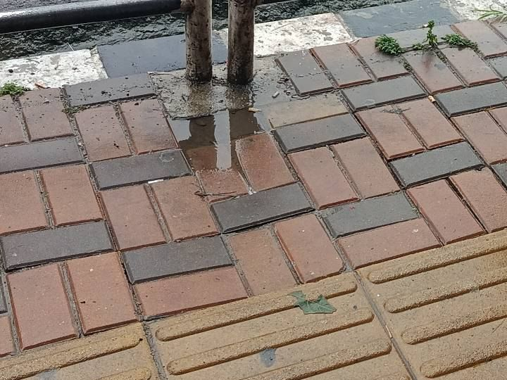
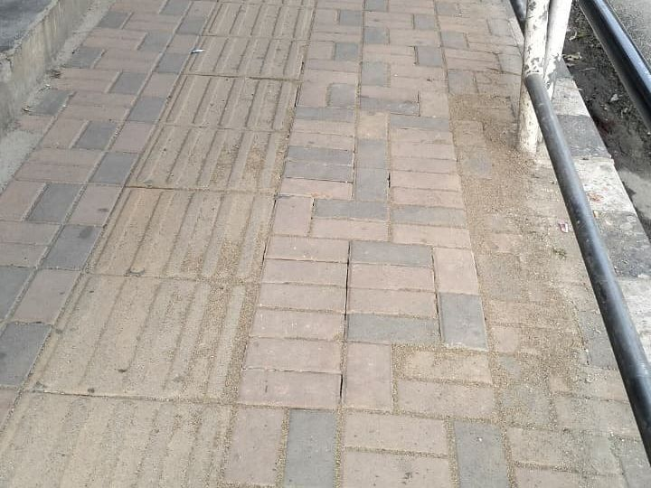
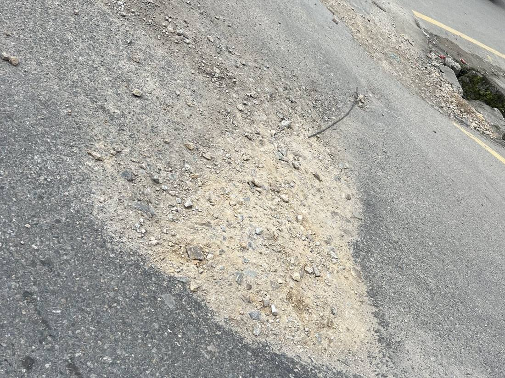
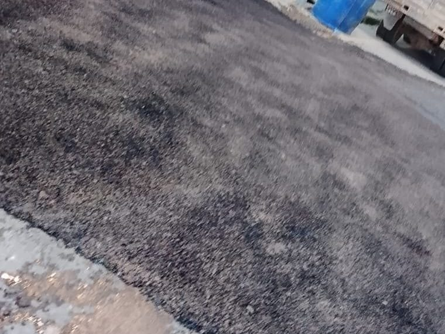

Sadak Sujhav first went live on 13 August 2026, and Road Division Kathmandu put it into formal operation on 17 September after a trial period. The idea is simple: a citizen photographs a problem on a road, the report reaches the road office responsible for that road, and the road office closes it with a photo of the finished work. This post sets out what that has added up to in the first two months, with figures as of 15 October 2026.
All 33 Department of Roads (DoR) divisions and 1,104 road sections are mapped in the system. When a citizen submits a report, its GPS location is matched to the road section it sits on, and from there to the DoR division that maintains that road. Nobody has to sort reports by hand or forward them between offices.
Three divisions are working on the Sadak Sujhav dashboard today: Kathmandu, Lalitpur and Bhaktapur. The reach of the app is already wider than that. Citizens have sent reports from 66 of Nepal's 77 districts, and because the whole national network is mapped, the system is ready for further divisions to come onto the dashboard.
Each completed repair carries two photos: the one the citizen took when reporting the problem, and the one the road office took after the work was done. On average, a problem has gone from report to repair in 9.7 days. 73 field officers and 14 road-office admins now use the system.
Below are five of the 69 completed repairs, all from roads maintained by the Kathmandu division road office.

Before
AfterRoad damage · Nagdhunga–Tankeswor · Kathmandu Division · repaired 15 October

Before
AfterWater on road · Baniyatar–Samakhusi–Lainchaur · Kathmandu Division · repaired 15 October

Before
AfterPothole · Samakhushi Chowk–Tokha · Kathmandu Division · repaired 9 October

Before
AfterFootpath · Maharajgunj–Bansbari · Kathmandu Division · repaired 9 October

Before
AfterRoad damage · Dandagaun–Gurjebhanjyang · Kathmandu Division · repaired 15 October
Credit for these repairs belongs to the Department of Roads division road offices that carried out the work, and to the citizens who took the time to report the problems.
Sadak Sujhav runs in the government data centre (NITC), with its official address at sadaksujhav.dor.gov.np.
You can see the product on the Sadak Sujhav page, read about the design in the case study, or catch up on the launch and the expansion to Lalitpur and Bhaktapur. The app is available on Google Play and the App Store.
We built Sadak Sujhav so that a damaged road becomes a report, the report reaches the right office, and the fix is there for everyone to see. Two months in, 69 repaired sites show that loop working.
Bring us your hardest problems. We'll tell you honestly what's buildable and how we'd approach it.
Start a Mission arrow_forward